Security is at the core of Scarpa Connection Manager. All of your server configurations, passwords, and connection details are heavily encrypted using Fernet symmetric encryption.
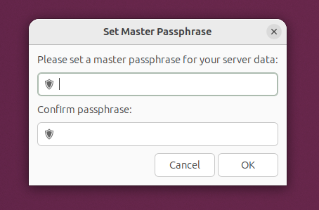
Setting the Master Passphrase on first launch.
When you launch the application for the very first time, you will be prompted to create a Master Passphrase. This passphrase acts as the master key to unlock your encrypted database. You will need to enter this passphrase every time you open the application.
Important: Do not lose your Master Passphrase! Because the encryption is handled locally on your machine, there is no "password recovery" option. If you lose it, you will not be able to access your saved servers.
2. The Main Interface
Once unlocked, you are presented with the main application window. The interface is designed to be clean and intuitive, utilizing a standard tree-view to manage your sessions.
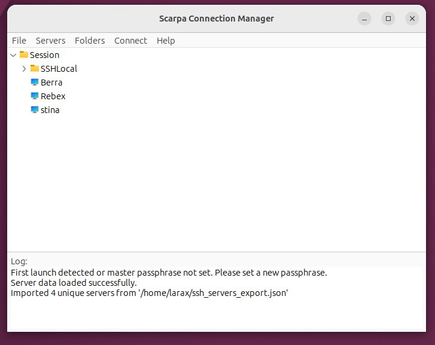
The main session tree and log window.
The window is divided into three main areas:
The Top Menu Bar: Quick access to File, Servers, Folders, Connect, and Help operations.
The Session Tree: Your hierarchical list of folders and saved server configurations.
The Log Window (Bottom): A real-time log showing application events, connection statuses, and errors.
2.1 Add or Edit Server
To begin managing your connections, you need to create a server entry. Because adding a new server and editing an existing one utilize the exact same configuration window, they are managed in exactly the same way.
There are two easy ways to open this window:
Via Right-Click: Right-click on any empty space or a folder to select Add Server, or right-click an existing server and select Edit Server.
Via Top Menu Bar: Click on Servers in the top menu bar, then select Add or Edit.
2.1.1 General Tab
When the configuration window opens, you will default to the General tab. This tab holds the core connection details required to reach your remote machine.
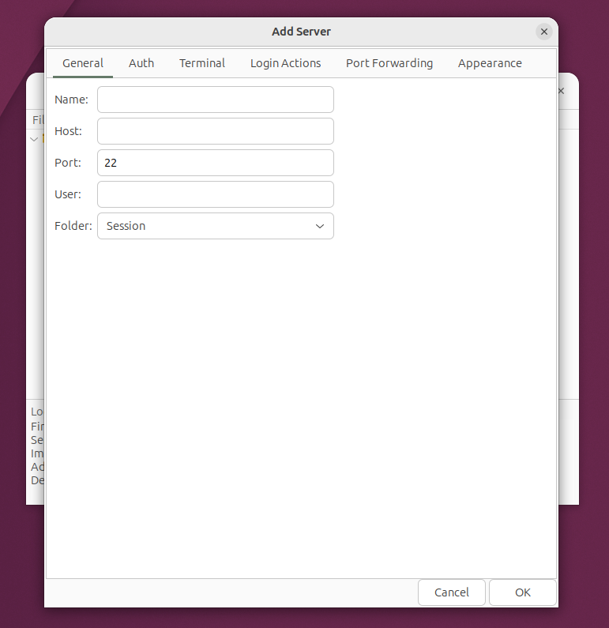
The General tab of the Server configuration window.
In this dialog, you only need to fill out the Name field as an absolute minimum requirement to create the entry. However, to successfully establish a connection later, you will also want to fill in the Host (IP or domain), Port, and User. You can also organize your tree view by assigning the server directly to a specific Folder using the dropdown menu.
2.1.2 Auth Tab
The Auth tab is where you define how Scarpa will authenticate with the remote server. You have two secure methods to choose from depending on your server's configuration:
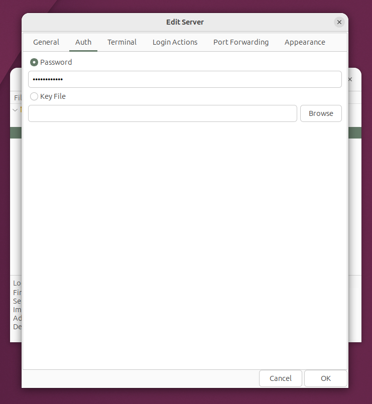
Configuring Password or Public Key authentication.
Password: The standard authentication method. Enter the user's password here. You can toggle the "Show Password" checkbox to verify you have typed it correctly before saving.
Public Key: For secure, key-based authentication (such as RSA or ED25519). Click the file browser button to locate your private key file (e.g., a .pem or id_rsa file) on your local machine. If your private key is protected by a password, enter it into the Passphrase field below.
Security Note: Whether you save a standard password or a key file passphrase, both are securely encrypted by your Master Passphrase within Scarpa's local database.
2.1.3 Terminal Tab
The Terminal tab allows you to customize the behavior of the SSH session window and configure session logging to keep records of your work.
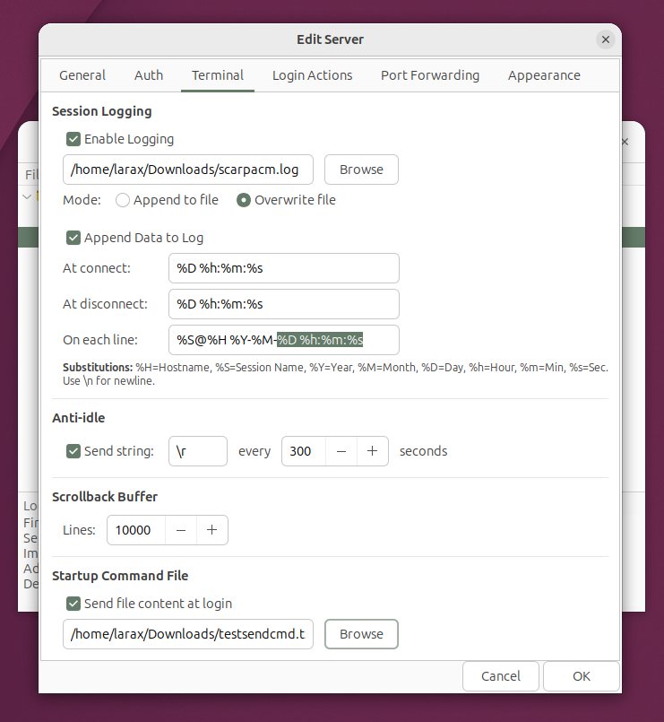
Configuring terminal behavior and session logging.
Here you can adjust several important background settings:
Scrollback Lines: Determines how many lines of history the terminal will remember. Increase this if you frequently run commands with massive text outputs and need to scroll up to read them.
Encoding: Sets the character encoding. UTF-8 is the modern standard and should rarely be changed, but legacy systems might require different encodings to display text correctly.
Keep-Alive Interval (s): Many firewalls or servers will drop your SSH connection if you don't type anything for a while. This setting sends a silent "ping" every X seconds to keep your session perfectly alive while you read or step away.
Log Session output: If you want a permanent record of what you did on the server, use the file browser button to select a save destination. Everything printed to your terminal will be saved to this text file.
Append timestamp to log name: Highly recommended if you are logging. This ensures that every time you connect, a new file is created with the current date and time instead of overwriting your old logs.
2.1.4 Login Actions Tab
If you connect to servers that require complex, multi-step login procedures (such as jump-servers that prompt for a secondary password, a specific user swap, or a 2FA prompt), you can fully automate the process using the Login Actions tab.
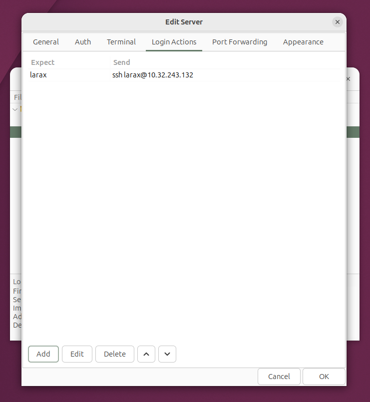
The main Login Actions tab showing a sequence of automated steps.
This system uses a standard Expect/Send mechanism. You tell Scarpa to "expect" a specific string of text to appear on the terminal screen, and then automatically "send" a specific keyboard response.
Adding or Editing an Action Step
Click the Add Step button to create a new sequence, or double-click an existing step to edit it.
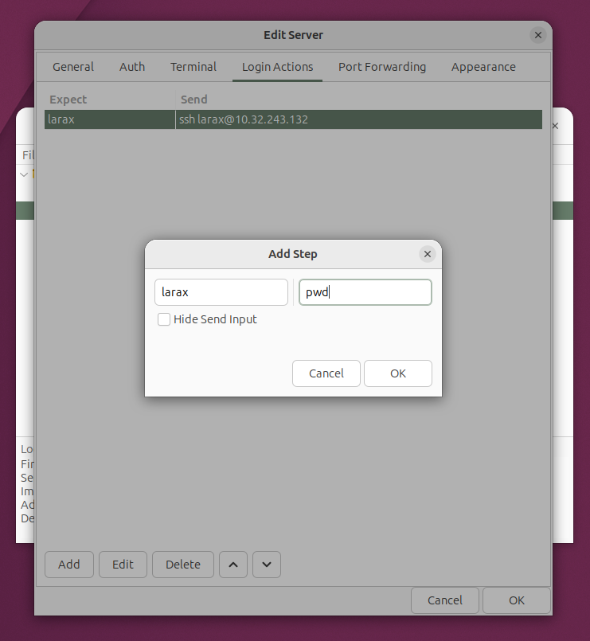
Configuring a new Expect/Send sequence.
When configuring a step, you will need to define three parameters:
Expect String: The exact text the server will print to the terminal (e.g., Password: or Verification code:). This is case-sensitive!
Send String: The text Scarpa should automatically type as a response. Note: Scarpa automatically presses "Enter" after sending this text.
Timeout (s): How many seconds Scarpa should wait for the "Expect" string to appear before giving up and returning keyboard control to you.
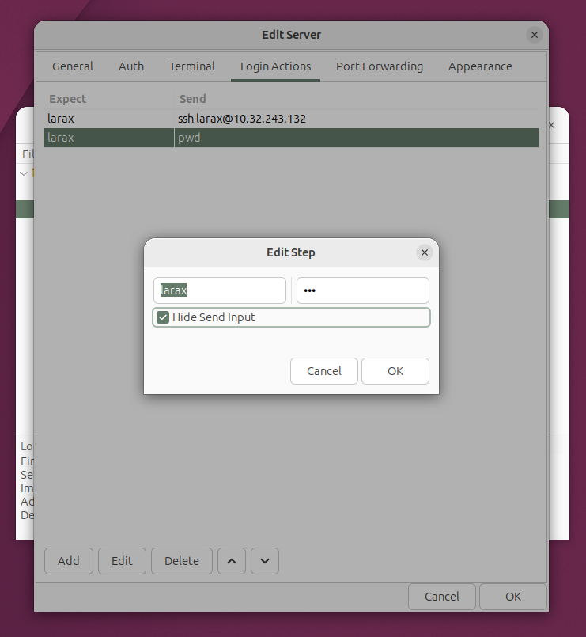
Using the "Hide Send Input" feature to mask passwords.
Security Tip: If your "Send String" is a static secondary password or PIN, check the Hide Send Input box. This will replace your text with dots on the screen so no one looking over your shoulder can read it. Just like your main server passwords, this hidden string is securely encrypted in your local database.
2.1.5 Port Forwarding Tab
SSH tunneling is an incredibly powerful feature, but remembering the exact command-line flags can be tedious. The Port Forwarding tab allows you to configure these tunnels visually. Any active rules you enable here will automatically establish the moment you connect to the server.
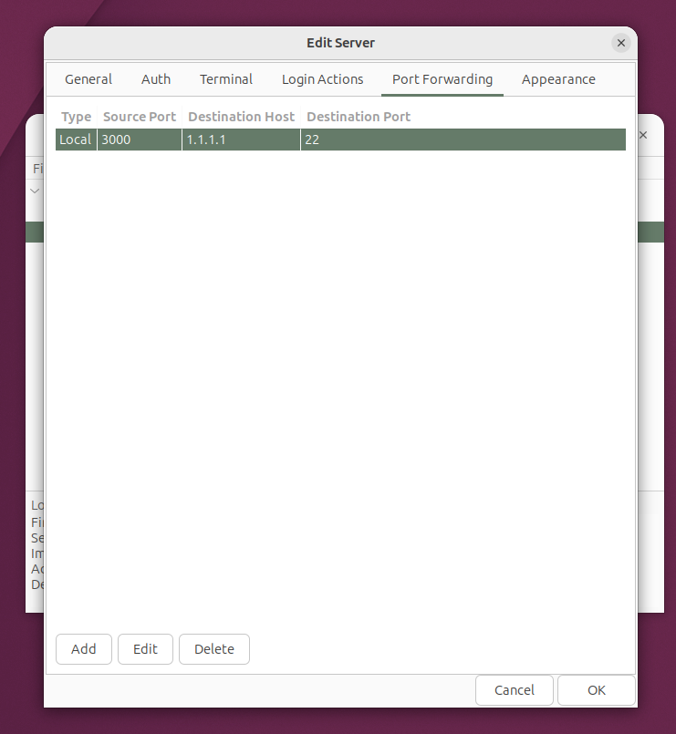
The main Port Forwarding tab showing a configured Local rule.
Adding a Forwarding Rule
Click the Add Rule button to open the configuration dialog. From here, you can define exactly how traffic should be routed.
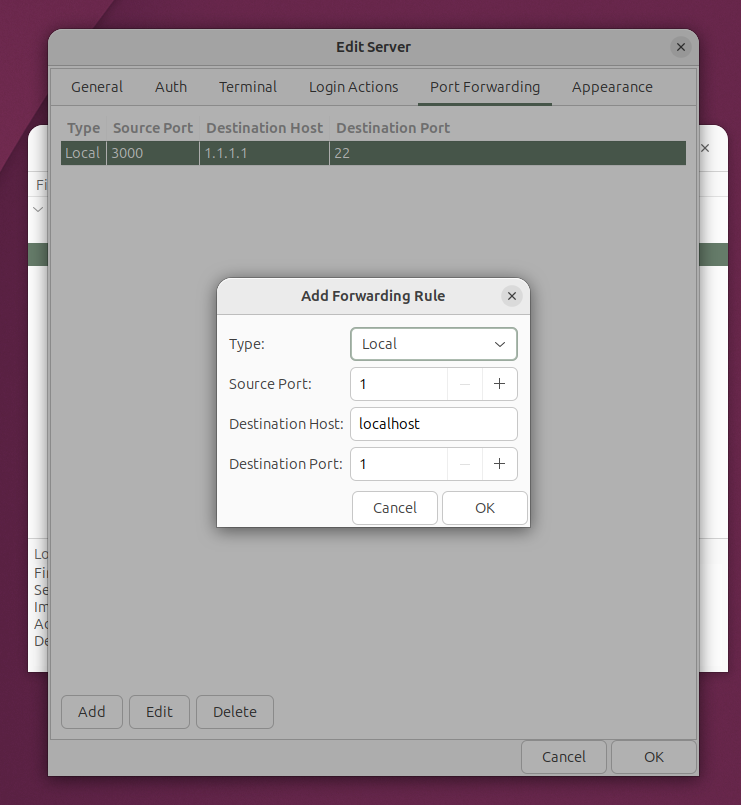
Configuring a new Port Forwarding rule.
The most important decision when creating a rule is selecting the correct Type from the dropdown menu:
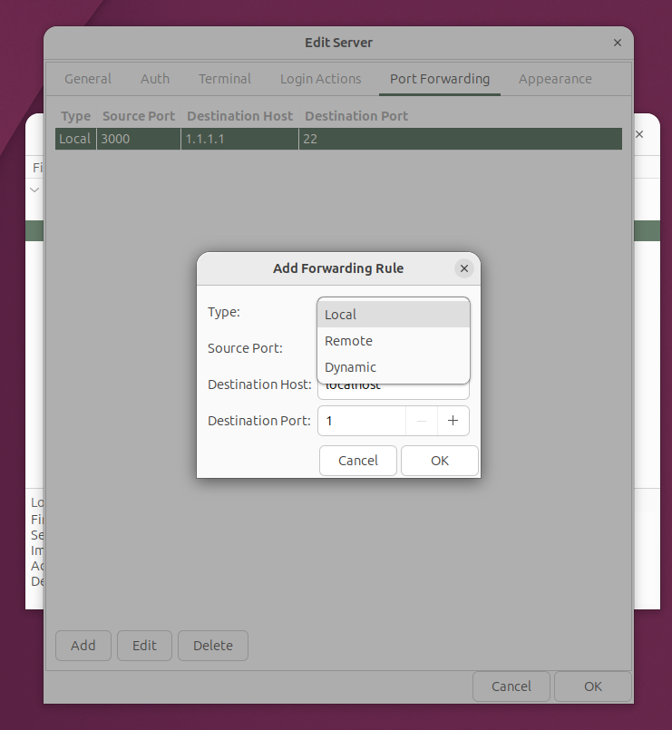
Choosing between Local, Remote, and Dynamic forwarding.
Local (L): Forwards traffic from a port on your local Ubuntu machine, through the SSH tunnel, to a specific address and port on the remote network. (Useful for accessing a remote database as if it were running securely on your own computer).
Remote (R): The exact reverse of Local. It opens a port on the remote SSH server and forwards traffic back through the tunnel to your local machine.
Dynamic (D): Creates a local SOCKS proxy server. You only need to specify a local Bind Port. Applications (like your web browser) can be configured to use this SOCKS proxy, automatically routing all their traffic securely through the SSH server.
2.1.6 Appearance Tab
The Appearance tab allows you to customize the visual presentation of the SSH terminal for this specific server. This is an excellent way to visually distinguish between different environments (e.g., setting a dark red background for Production servers, and a standard black background for Development servers).
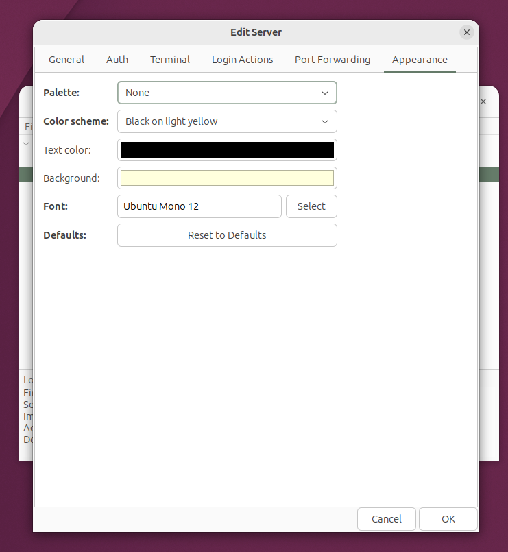
The main Appearance configuration tab.
Pre-built Color Schemes
If you want a cohesive, professionally designed terminal look, you can select one of the built-in presets from the Color Scheme dropdown. This includes popular developer themes like Tango, Solarized, and Dracula.
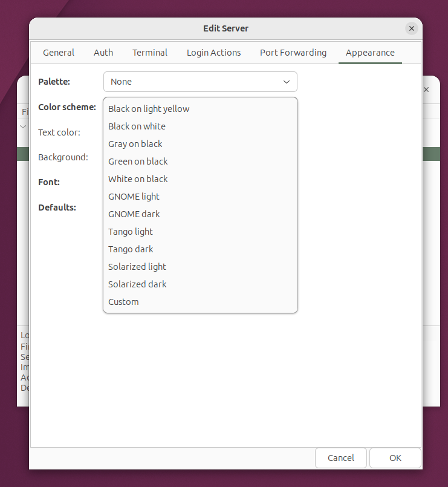
Selecting a pre-built color scheme.
Custom Colors & Palettes
If you prefer full control, you can define exactly how you want the terminal to look by adjusting the Custom Palette or clicking directly on the Text and Background color buttons.
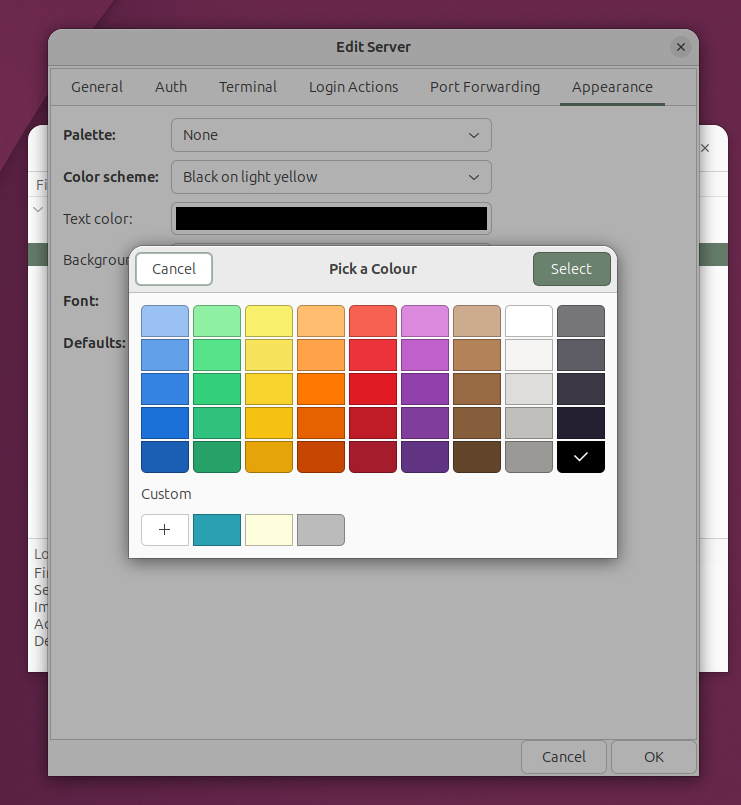
Using the system color picker for exact shades.
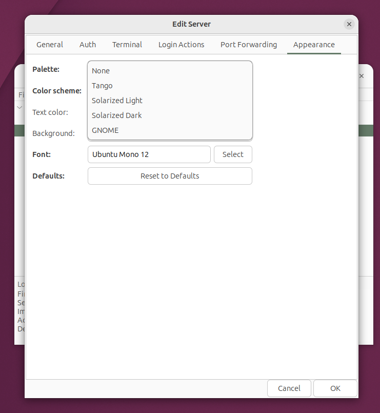
Adjusting the specific 16-color ANSI palette.
Custom Typography
Finally, you can override the system's default terminal font. Clicking the Terminal Font button will open the standard Ubuntu font selection dialog, allowing you to choose your preferred monospace font and size for maximum readability.
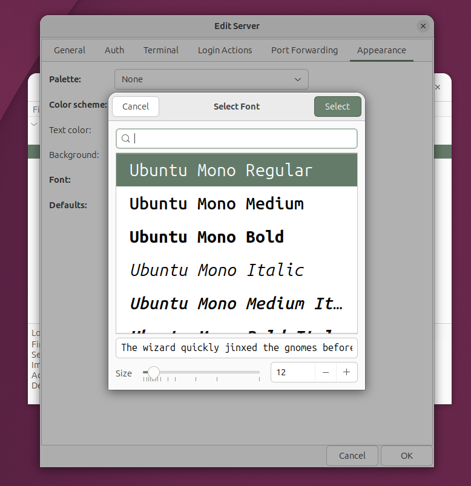
Selecting a custom monospace font.
3. Organizing Folders & Servers
If you manage dozens or hundreds of servers, organization is critical. Scarpa allows you to build deeply nested folder structures to keep your environments perfectly sorted.
3.1 Adding & Managing Items
You can create, edit, and delete both Folders and Servers using two primary methods:
The Top Menu Bar
The Folders and Servers menus at the top of the window provide quick access to all management actions. If you have a specific folder selected in your tree, adding a new item via these menus will automatically place it inside that selected folder.
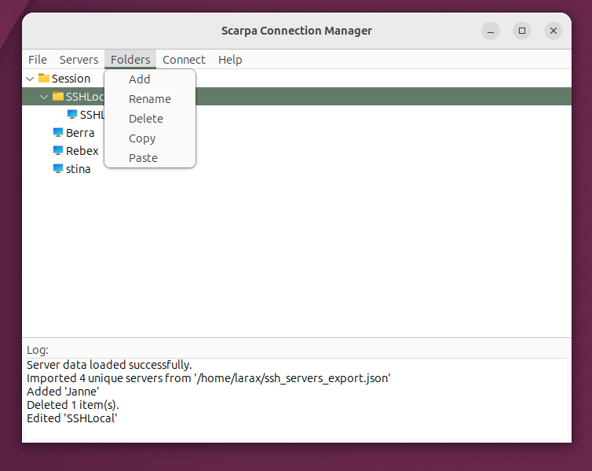
Managing folders via the Topbar Menu.
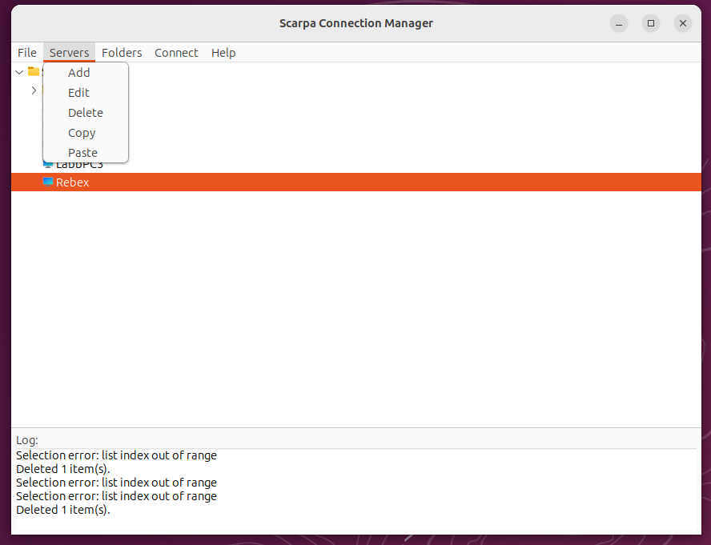
Managing servers via the Topbar Menu.
The Right-Click Context Menu
For a faster workflow, you can right-click directly on any item in your Session Tree. The context menu dynamically changes depending on whether you right-click a Folder or a Server, giving you instant access to edit, delete, or add new items inside that specific location.
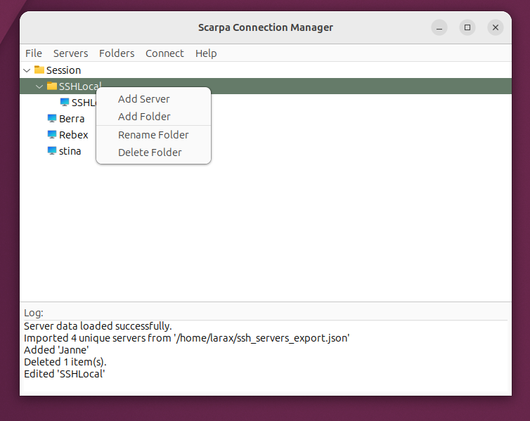
The Folder context menu.
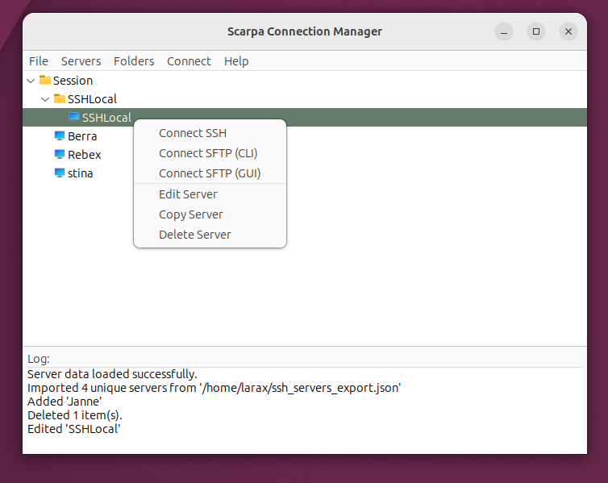
The Server context menu.
3.2 Drag and Drop
You do not need to manually edit items to move them around. Scarpa supports full native drag-and-drop mechanics to reorganize your structure on the fly.
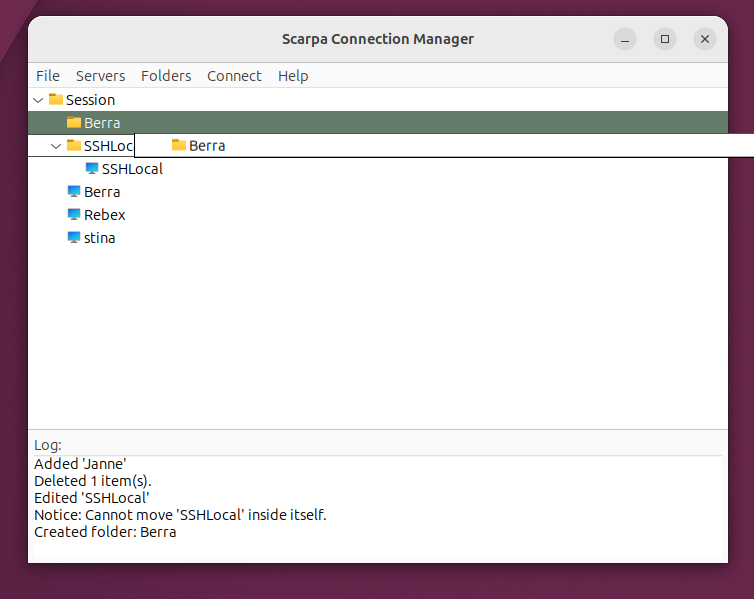
Dragging a folder into a new location.
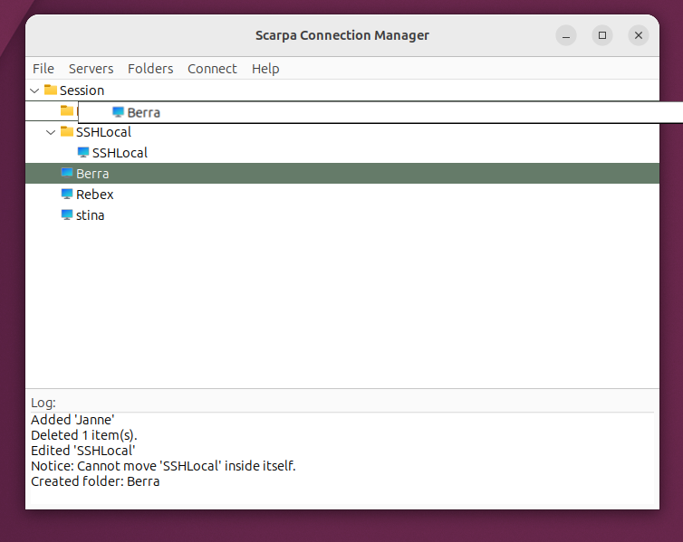
Dragging a server into a different folder.
3.3 Inline Renaming
To quickly rename an item without opening the full configuration window, simply select the folder or server and trigger the rename action (via the right-click menu, the top menu, or by pressing your system's rename shortcut, like F2). The text will become editable directly within the tree view!
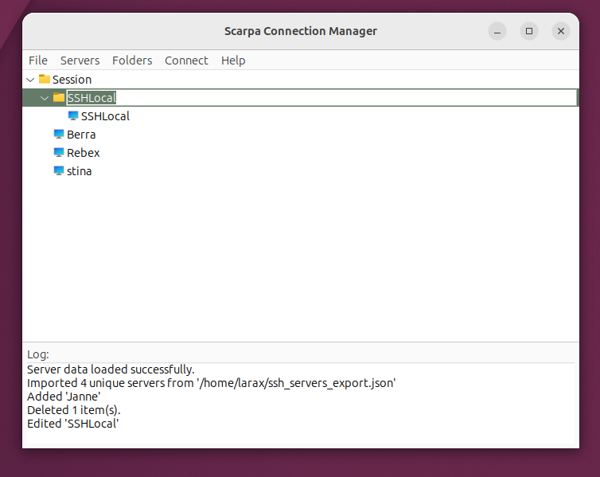
Editing a folder name directly in the tree view.
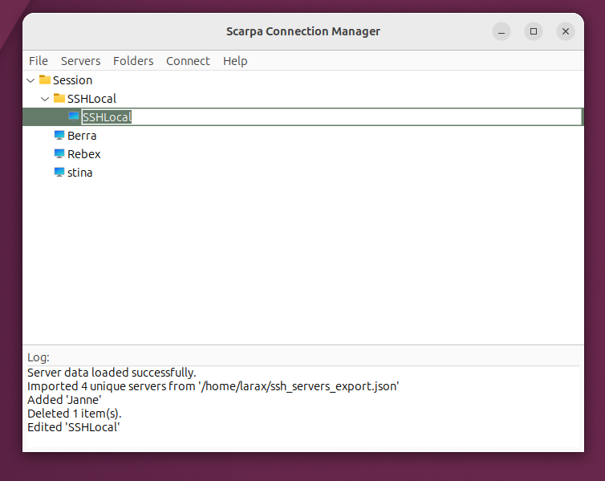
Editing a server name directly in the tree view.
4. Importing & Exporting Data
Scarpa makes it easy to migrate your data in and out of the application securely. Whether you are moving from another operating system or backing up your configurations, the Import and Export tools have you covered.
4.1 Importing from other Apps
If you are migrating to Scarpa from Windows or another Linux connection manager, you do not have to recreate all your servers manually. Scarpa can automatically parse and import existing server lists.
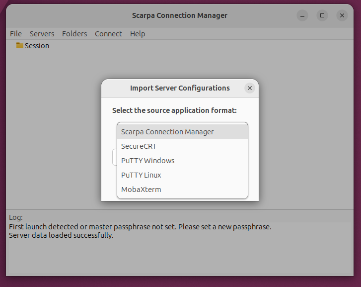
Importing configurations from external tools like MobaXterm or SecureCRT.
To import your connections:
Go to the Top Menu Bar and select File -> Import.
In the dialog window, select the Source Format from the dropdown menu (currently supporting exports from MobaXterm, SecureCRT, and PuTTY).
Use the file browser button to locate the export file (such as an XML or INI file) generated by your old application.
Click Import. Scarpa will automatically extract the folders and servers, encrypt them using your Master Passphrase, and instantly display them in your Session Tree.
4.2 Exporting Backups
Because Scarpa uses strict local encryption with no background cloud-syncing, it is highly recommended to regularly back up your server list yourself. The Export tool provides options for both maximum security and portability.
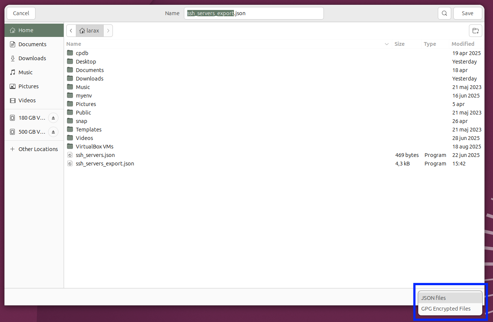
Exporting data with Plaintext or GPG encryption options.
To create a backup, navigate to File -> Export. You have two format choices depending on your needs:
GPG Encrypted (.gpg): (Highly Recommended) This bundles your entire database and encrypts it using standard GPG encryption. You will be prompted to create a specific password for this file. Because it is securely encrypted, you can safely store this backup file in cloud services like Google Drive or Dropbox without worrying about your server credentials being compromised.
Plaintext JSON (.json): This exports your entire folder structure, server IPs, and usernames into a highly readable JSON file. Warning: For security reasons, this option will strip out all your passwords. This format is primarily useful if you want to write custom scripts to parse your server list, or if you need to bulk-edit server names in a text editor before re-importing.
5. Global Default Settings
If you find yourself repeatedly setting the same terminal colors, fonts, or scrollback buffers for every new server you create, you can save a significant amount of time by configuring your Global Default Settings.
To access this menu, click on File -> Default Settings in the Top Menu Bar.
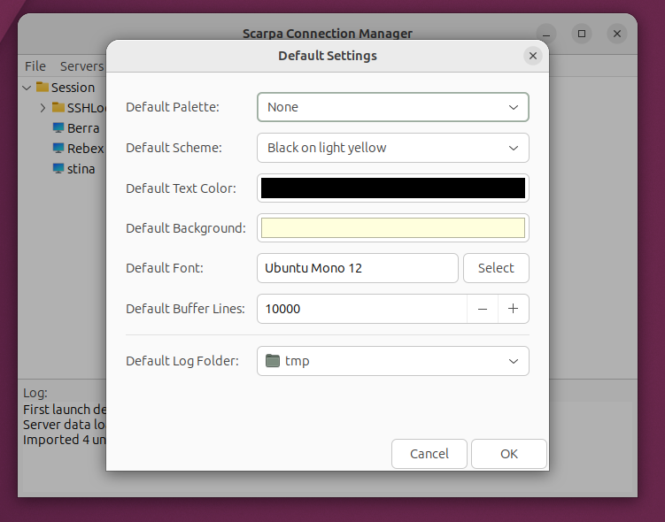
Configuring the global baseline settings for the application.
This configuration window allows you to define your preferred baseline parameters. These global settings interact with your connections in two specific ways:
Adding New Servers: Every time you create a brand new Server Connection, it will automatically inherit these exact values right out of the box, saving you from having to visit the Appearance tab manually.
Resetting Existing Servers: If you are modifying an existing server's Appearance tab and want to scrap your custom changes, clicking the Reset to Defaults button will instantly pull the values you defined here in this global menu.
6. Changing the Master Passphrase
Security is an ongoing process. If you ever need to update your encryption key, Scarpa makes it easy to securely rotate your Master Passphrase without losing any of your saved configurations.
To initiate this process, click on File -> Change Passphrase in the Top Menu Bar.
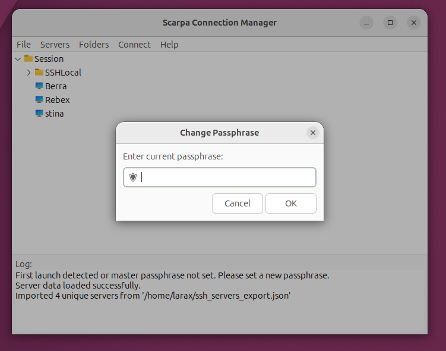
Step 1: Authenticate with your current passphrase.
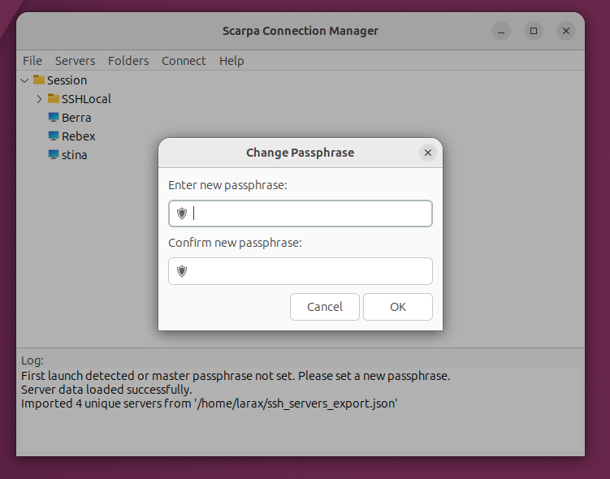
Step 2: Set and confirm your new master passphrase.
The process works in two secure steps to prevent accidental lockouts:
Verification: First, you will be prompted to enter your current passphrase to verify your identity.
Rotation: Once verified, a second dialog will appear asking you to type and confirm your new passphrase.
Behind the Scenes: When you successfully complete this process, Scarpa instantly decrypts your database in memory, generates a brand new cryptographic salt, and securely re-encrypts all your stored servers with the new passphrase. Your old passphrase will immediately stop working.
7. Connecting to Servers
Once your servers are configured, establishing a connection is just a click away. Scarpa provides direct access to both standard SSH terminal sessions and command-line (CLI) SFTP sessions.
7.1 Initiating a Connection
There are two primary ways to launch a session with a saved server:
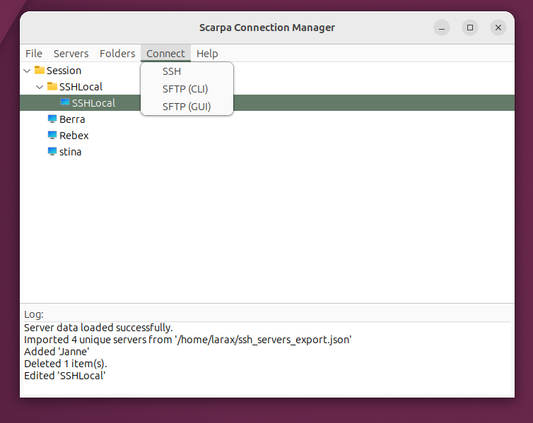
Connecting via the top menu bar.
Connecting directly via the right-click context menu.
Via the Topbar Menu: Select your server in the tree, then click Connect in the top menu bar to choose your session type.
Via Right-Click: (Highly Recommended) Simply right-click the server directly in your tree and choose your desired connection type from the context menu. This is generally the fastest workflow.
7.2 SSH & CLI SFTP Sessions
When you initiate a connection, Scarpa handles all the background authentication—seamlessly passing your decrypted passwords or key files—and drops you straight into the terminal.
Connect SSH: This opens a standard secure shell terminal window, giving you full interactive command-line access to the remote machine. Any automated Login Actions, custom colors, fonts, or port forwarding rules you defined for this server will automatically activate the moment this window opens.
Connect SFTP (CLI): If you prefer to manually type your file transfer commands, this option opens a terminal dedicated to the standard interactive SFTP prompt. Here you can execute raw commands like get, put, ls, and cd directly against the remote filesystem.
7.3 Visual SFTP GUI
While command-line tools are great for quick tasks, managing large file transfers or navigating complex directories is often easier with a visual interface. To launch this mode, right-click your server and select Connect SFTP (GUI).
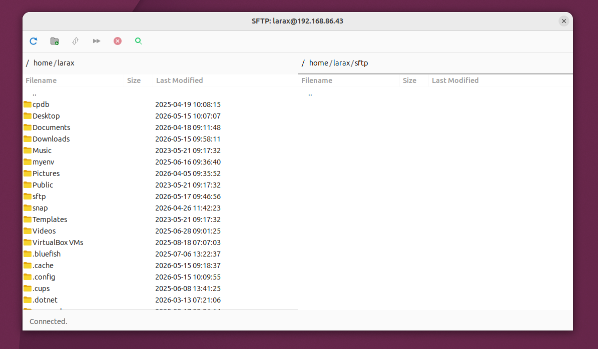
The dual-pane visual SFTP interface for managing file transfers.
The SFTP GUI features a familiar, highly efficient dual-pane layout designed to make file operations as seamless as possible:
Local Machine (Left Pane): Displays the files and folders currently on your own Ubuntu computer.
Remote Server (Right Pane): Displays the filesystem of the connected SSH/SFTP server.
Intuitive Navigation: Both panes feature quick-access pathbars at the top, allowing you to jump instantly to specific directories or navigate up the tree using the "Up" directory buttons.
Drag & Drop Transfers: To upload or download files, simply click and drag items from one pane to the other.
Transfer Queue (Bottom): The bottom panel provides real-time monitoring of your active file transfers, showing current progress, successful completions, and any potential errors.
7.3.1 Refresh
At the very top of the SFTP interface sits the quick-action toolbar. Let's look at the first control on the left:
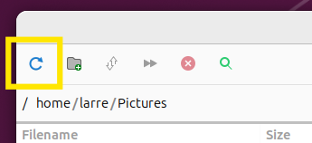
The SFTP quick-action toolbar.
Refresh: This button simultaneously refreshes the file directory structures on both the Local (left) and Server (right) panes. This is incredibly useful to verify that a transfer completed successfully, or to see new log files created by background processes on the server.
7.3.2 Add Folder
Organizing your files often requires creating new directories. Scarpa provides two quick ways to create a new folder within whichever pane (Local or Server) you currently have active:
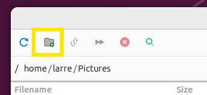
Method 1: Using the top toolbar button.
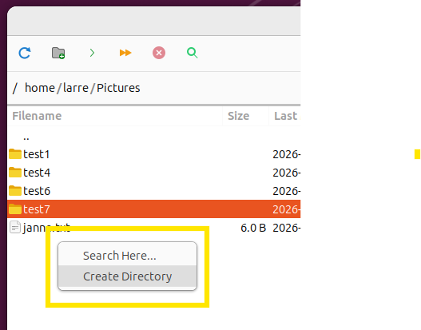
Method 2: Using the right-click context menu.
Via the Toolbar: Click the Create Folder icon (the folder with a plus sign) in the top action bar.
Via Right-Click: Simply right-click anywhere in the empty space of your active file list and select Create Folder.
Both methods will prompt you for the new folder's name and instantly create it in your current active directory.
7.3.3 Upload & Download
The core feature of the SFTP GUI is transferring files between your local machine and the remote server. Scarpa provides three highly intuitive ways to move your data:
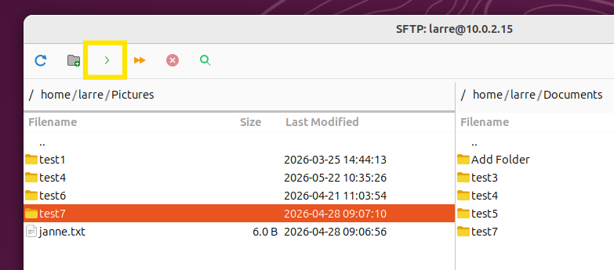
The Upload arrow (Local to Server).
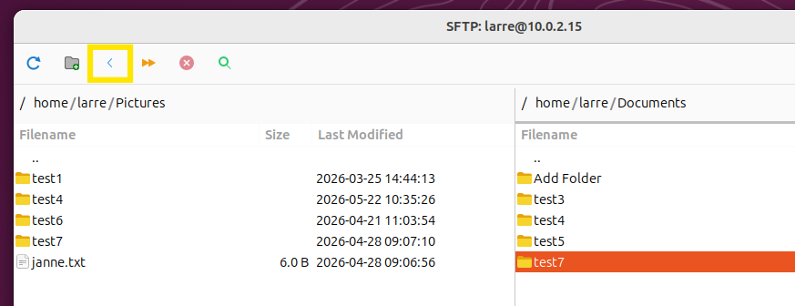
The Download arrow (Server to Local).
Via Toolbar Arrows: The arrows are context-sensitive based on what you have selected. If you select a file or folder in the Local (left) pane, clicking the Right Arrow icon will Upload it to the server. Conversely, selecting an item in the Server (right) pane and clicking the Left Arrow icon will Download it to your local machine.
Via Keyboard Shortcuts: For maximum speed, you can use standard OS keyboard shortcuts. Select an item and press Ctrl+C (Copy) or Ctrl+X (Cut), then click anywhere inside the opposite pane and press Ctrl+V (Paste).
Via Drag and Drop: The most visual method! Click and hold any file or folder, drag it across the screen into the opposite pane, and release. Advanced Tip: You can also drag items directly onto specific parent folders in the breadcrumb pathbar to drop them exactly where you need them!
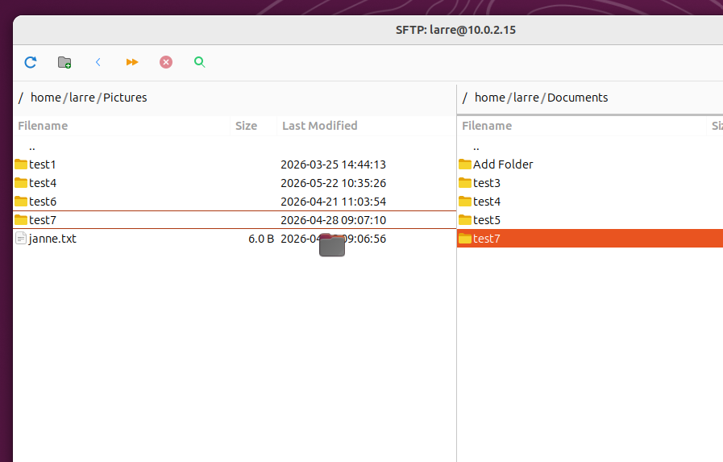
Standard Transfer: Dragging into the opposite pane.
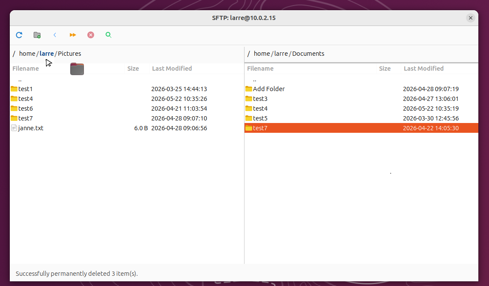
Advanced Transfer: Dragging directly onto the breadcrumb path.
7.3.4 Stop & Resume Transfers
When transferring massive directories or dealing with unstable internet connections, you may need to manually intervene in the file transfer process. The SFTP toolbar provides dedicated controls for managing your active transfer queue.
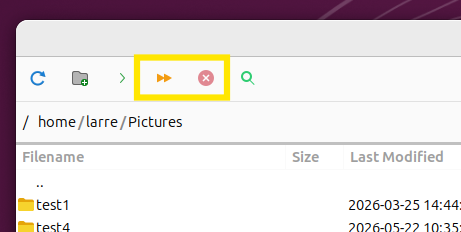
The Resume (orange double-arrows) and Stop (red X) buttons on the SFTP toolbar.
Stop (Red X): Instantly aborts the currently active transfer. This is incredibly useful if you realize you accidentally dragged the wrong massive folder and want to cancel the operation before it finishes copying.
Resume (Double Arrows): If a transfer was interrupted (either by manually stopping it, or due to a dropped network connection), you do not have to start over. Select the partially transferred file and click this button to resume the transfer exactly from where it left off!
7.3.5 Search Recursively
Finding a specific file buried deep within a complex directory structure can be tedious. The SFTP GUI includes a powerful recursive search tool to handle the heavy lifting for you.
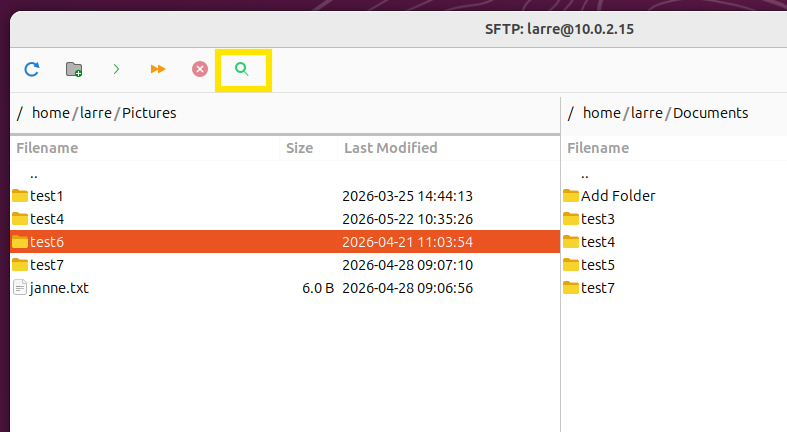
Step 1: Click the Search icon (magnifying glass) on the toolbar.
The search function is context-sensitive; it operates on whichever pane (Local or Server) you currently have active, and searches through your current directory and all subfolders beneath it.
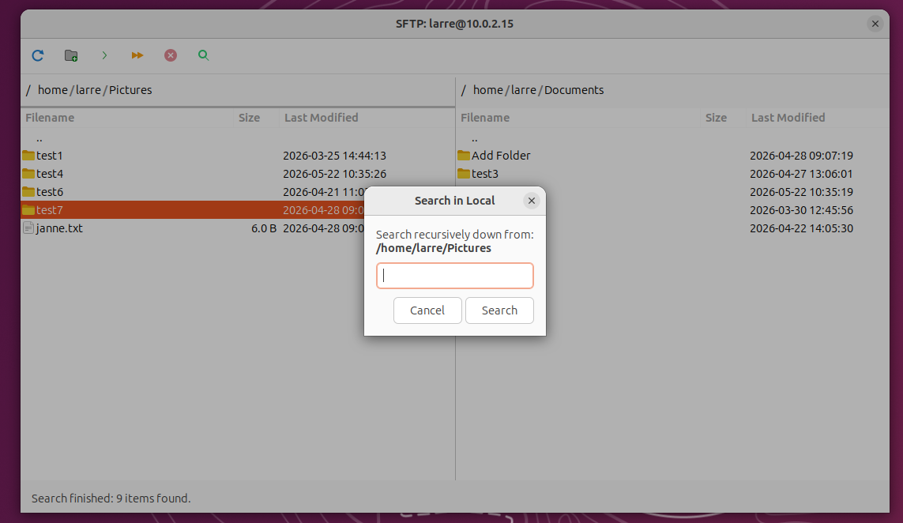
Step 2: Enter your search term.
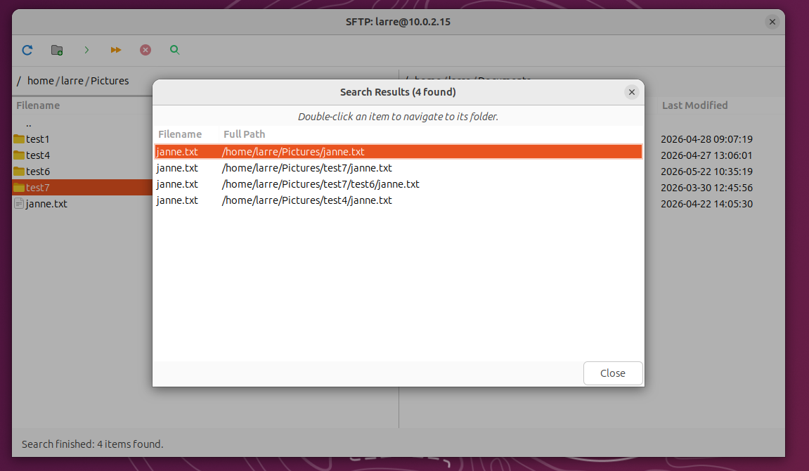
Step 3: Double-click a result to navigate there instantly.
Input: Type a partial or exact filename into the prompt and click Search.
Results: A new window will populate with all matches, displaying their full file paths.
Quick Navigation: If you find the file you were looking for, simply double-click it in the results list! Scarpa will instantly navigate your active pane directly to that specific folder so you can begin working with the file immediately.
7.3.6 Open Default File Types
A major convenience feature of the SFTP GUI is its seamless integration with your local operating system. You do not always need to manually download a file just to view or edit it.
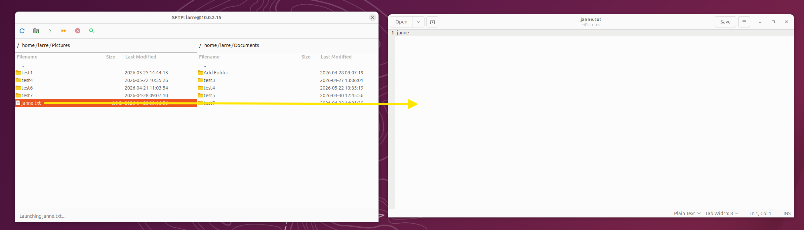
Double-clicking a text file instantly opens it in the system's default text editor.
If you double-click any recognized file (such as a .txt document, a .png image, or a .json config file) within either the Local or Server pane, Scarpa will automatically launch it using whatever default application your computer has assigned to that specific file type.
Behind the Scenes: If you double-click a file located on the remote server, Scarpa automatically downloads it to a secure temporary folder in the background and opens it for you, saving you several manual workflow steps!
8. Installation & Troubleshooting
Scarpa Connection Manager is officially hosted on an Ubuntu PPA for the most flexible installation, and the Canonical Snap Store for users who prefer sandboxed containers.
🚀 Install via Ubuntu PPA (Recommended)
The recommended way to install Scarpa on Ubuntu is via our official Personal Package Archive (PPA). Because this uses standard Debian packaging, the application has unrestricted access to your host file system. This is highly recommended if you plan to save session logs to system directories like /tmp or custom external drives.
Open your terminal and run the following commands:
If you prefer containerized applications, Scarpa is also available in the official Snap Store. The Snap package comes pre-packaged with all background tools (like specific versions of SSH and Expect) so they don't clutter your main system.
Note: Because the Snap package runs in a strict, isolated container, the application is restricted from writing to certain parts of your host file system.
To install the Snap version, run:
sudo snap install connection-manager-scarpa
Launching the App: Once installed, you can launch the application from your desktop's main application menu, or by typing the application name into your terminal.